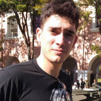

<div class="container mt-4">
    <div class="row">
        <div class="d-flex justify-content-center">
            <div class="col-md-8 bg-white p-5 rounded">
                
                <h3>ABOUT ME</h3>
                <hr>
                <p>Always been involved in the maintenance scenario. Worked at a multinational oven factory,
                    and then I've found an opportunity to work as a heavy machinery mechanic at a local
                    Caterpillar's brand dealer. Embracing this opportunity, I have developed a strong
                    passion for this branch of mechanics.
                    Wanting to go further on understanding them, I started a Control Engineering bachelor
                    graduation in which I have found another passion for modeling and control systems.

                    One of my main characteristics is that I love to learn something new every single day. I
                    am always listening to podcasts, books, studying something or profounding a soft skill.
                    Very interested in robotics, computational and predictional models. I'm also a
                    high-level language developer (like Python and JS) and I'm involved in the development
                    of a few personal or friends' tools.
                </p>
            </div>
        </div>
    </div>
</div>